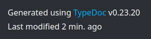

typedoc-plugin-extras
typedoc-plugin-extras

This plugin only works for HTML documentation.
A TypeDoc plugin to add extras to the output documentation.
It allows you to:
- Set a custom favicon.
- Add the date/time of generation after "Generated using TypeDoc" in the footer. (cf. the example below)
- Set a custom top-most title name (without changing the package name, like
--namewould do).- For example, you could have
--customTitle "Go back" --titleLink <url-of-your-parent-documentation>
- For example, you could have
- And more... (cf. the list of arguments below)
No date/time will be added if --hideGenerator is set (because the footer wouldn't exist).
All extras are disabled by default: they are opt-in.
Feel free to ask for another extra or to make a PR 😉
Example

You also can view an example documentation using the plugin here:
https://drarig29.github.io/typedoc-plugin-extras/
Installation
npm install --save-dev typedoc-plugin-extras
Usage
$ npx typedoc --plugin typedoc-plugin-extras [args]
Arguments
The following arguments can be used in addition to the default TypeDoc arguments.
-
--customTitle
Specify a custom title, for the top-most title only.
Example:foo -
--customDescription
Specify a custom<meta name="description"property.
Example:An example description -
--favicon
Specify the path or URL of the favicon file.
Example:public/favicon.ico
Note: If given a path, the favicon file is copied into the documentation's output directory (--out). -
--footerTypedocVersion
Appends the TypeDoc version in the footer.
Default:false -
--footerLastModified
Appends a "Last Modified" text in the footer (e.g. "Last modified 6 min. ago").
Default:false
Note: If specified, the--footerDateand--footerTimeoptions are ignored. -
--footerDate(deprecated)
Appends the date of generation in the footer (e.g. "Jul 29, 2022").
Default:false
Note: If combined with--footerTime, it will append "Jul 29, 2022, 3:44:42 PM GMT+2". -
--footerTime(deprecated)
Appends the time of generation in the footer (e.g. "3:44:42 PM GMT+2").
Default:false
Note: If combined with--footerDate, it will append "Jul 29, 2022, 3:44:42 PM GMT+2".
Testing
To test this plugin, you can generate TypeDoc documentation for this plugin.
To do so, you'll first need to build it:
npm run build
Then, you can generate the documentation with the plugin (from source):
npm test